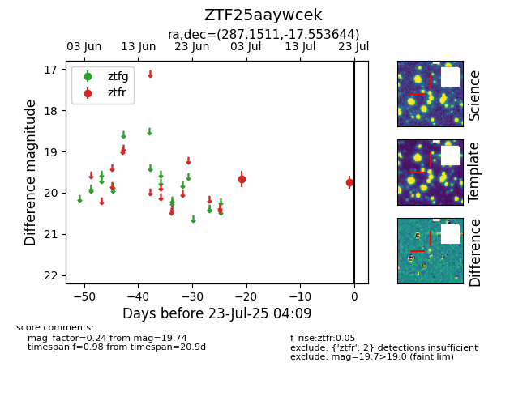

Target ZTF25aaywcek at 2025-07-23 12:37, see:
FINK: fink-portal.org/ZTF25aaywcek
Lasair: lasair-ztf.lsst.ac.uk/objects/ZTF25aaywcek
ALeRCE: alerce.online/object/ZTF25aaywcek
alt names
ZTF25aaywcek (ztf,fink)
coordinates:
equatorial (ra, dec) = (287.1511,-17.55364)
galactic (l, b) = (18.9981,-11.59678)
photometry
last ztfr=19.74
2 ztfr detections
